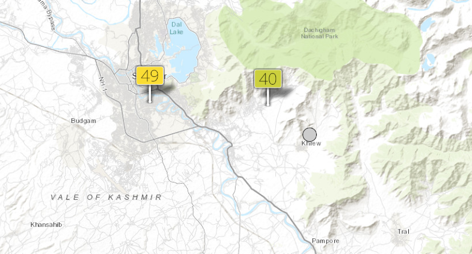
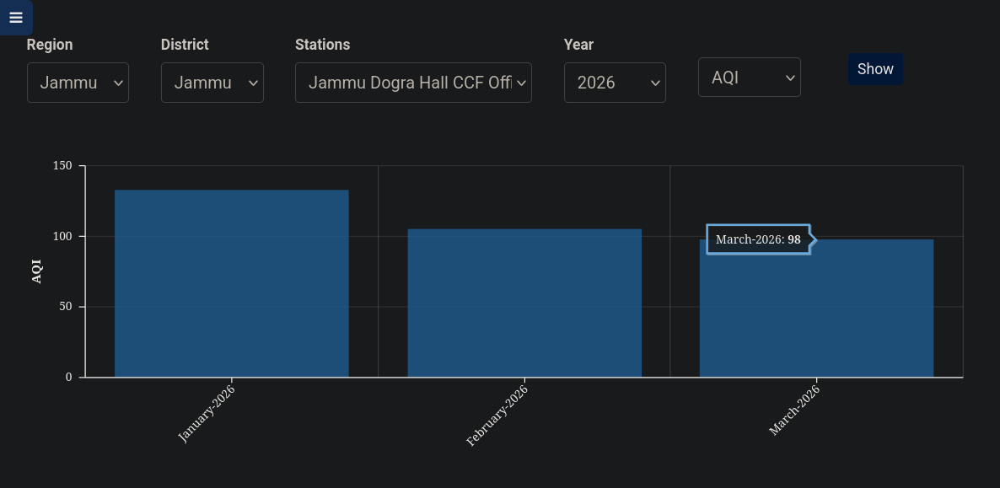

Breathe
Mission Statement
Information about the air people breathe every day should be accurate, immediate, and verifiable.
BreatheOSS was built in response to a clear gap between reported air quality and lived reality. In a region where people depend heavily on official AQI data, that data must reflect actual exposure, including short-term spikes and inconsistencies. We aim to provide ground-level, real-time measurements that remain transparent at every stage, ensuring that what is shown corresponds to what people are truly breathing.
The Problem
Publicly available AQI data for Jammu and Kashmir is, at best, unreliable. The region has very few government-operated reference stations. Other platforms fill the gap with satellite estimates or interpolated models, but without ground-level validation, those numbers are difficult to trust. None of this data is open, and very little of it is explained.


Our Approach
We believe in ground truth. Our network uses a hybrid approach: official AirGradient kits alongside DIY units built using AirGradient’s open-hardware files. This ensures that manufacturing and assembly stay in India, avoiding the prohibitive costs of international shipping and customs while maintaining rigorous, open standards. Where we lack ground coverage, satellite modeling (CAMS) fills in the gaps for regional trends.
Official kits + India-assembled DIY open-hardware, validated against reference instruments.
Regional trends via CAMS modeling via Open-Meteo, used for areas without ground sensors.
Philosophy
Air quality data is only meaningful if it can be trusted. That trust depends on transparency, consistency, and access to raw information. We reject systems that obscure reality through extended averages, incomplete reporting, or closed methodologies. Pollution is experienced in real time, not as a smoothed monthly value, and any system that fails to reflect that undermines public awareness. Our approach is built on openness at every level: open hardware, open data, and clear documentation. This allows independent verification, encourages accountability, and ensures that monitoring serves its intended purpose—not convenience, but truth.